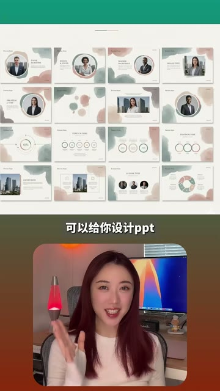
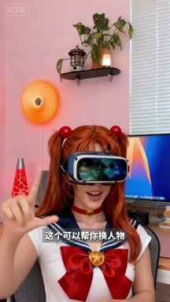
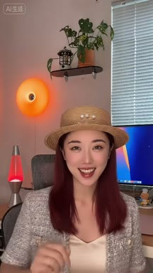
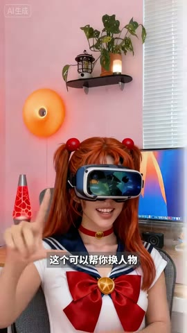

AI 视频工具
通义万相 AI 视频
替换视频中的人物形象
- 什么时候用
- 已有一段人物视频，希望保留动作或场景，同时把主体换成另一种角色形象
- 画面直接证据
- 通义万相AI视频；画面说明其为阿里推出的 AI 视频工具；主持人被替换为美少女战士造型
- 视频没有证明
- 视频未展示上传要求、可控范围、价格、生成耗时与失败率
通义万相用于人物替换，PixVerse 用于视频特效，Vidu 用于与指定人物同框，Runway 用于换穿搭，Manus 用于生成 PPT，即梦用于生成动漫视觉。
这条视频不是操作教程，而是一张高速工具选择地图。工具名写在画面顶部，口播只说用途，结果画面负责证明；因此必须把字幕、画面文字和结果镜头三条信息通道合并，才算真正读懂。
通义万相用于人物替换，PixVerse 用于视频特效，Vidu 用于与指定人物同框，Runway 用于换穿搭，Manus 用于生成 PPT，即梦用于生成动漫视觉。
不是仅靠字幕猜测。每个答案都同时对齐工具标识、口播用途与结果画面；“视频没有证明”的内容单独列出。
替换视频中的人物形象
为现有画面添加夸张视频特效

生成自己与指定人物同框的短视频
在视频中一键更换人物穿搭
根据任务生成并设计整套 PPT

把视觉概念生成动漫风格画面或动画片段
不是复述内容，而是标出每一段承担的叙事任务、观众问题和画面证据。
画面顶部直接标出通义万相 AI 视频，随后主持人变成美少女战士造型。视频传递的是人物替换能力：适合保留原始镜头结构，同时把主体改成另一个角色。
工具卡写明 PixVerse，结果镜头让房间突然被水淹没。它承担的是快速制造视觉奇观和短视频钩子的任务，而不是常规剪辑。
Vidu 被映射到“和任何人同框拍短视频”。乔布斯形象进入真实房间并与主持人同框，展示跨人物合成的创作想象。
Runway 对应同一人物的连续换装。画面通过帽子、上衣和整体风格变化证明用途，但没有交代具体功能名称与操作路径。
Manus 被用于设计 PPT，画面展示两套多页演示文稿。观众能确认产物类型，却无法从视频判断内容准确性、可编辑性和导出格式。
即梦对应动漫内容生成。结果是一段红发女孩、VR 眼镜与森林小鹿构成的动漫画面，证明风格化结果，但没有说明图生视频还是文生视频。
下列章节覆盖视频的主要论点、步骤与结果；每段都保留时间码和关键画面。

画面顶部直接标出通义万相 AI 视频，随后主持人变成美少女战士造型。视频传递的是人物替换能力：适合保留原始镜头结构，同时把主体改成另一个角色。
工具卡写明 PixVerse，结果镜头让房间突然被水淹没。它承担的是快速制造视觉奇观和短视频钩子的任务，而不是常规剪辑。

Vidu 被映射到“和任何人同框拍短视频”。乔布斯形象进入真实房间并与主持人同框，展示跨人物合成的创作想象。

Runway 对应同一人物的连续换装。画面通过帽子、上衣和整体风格变化证明用途，但没有交代具体功能名称与操作路径。
Manus 被用于设计 PPT，画面展示两套多页演示文稿。观众能确认产物类型，却无法从视频判断内容准确性、可编辑性和导出格式。

即梦对应动漫内容生成。结果是一段红发女孩、VR 眼镜与森林小鹿构成的动漫画面，证明风格化结果，但没有说明图生视频还是文生视频。

短视频每 1 秒、常规视频每 2 秒、超长视频每 3 秒取一帧。


小红书官方 zh-CN 字幕 · 6 段 · 64 字。字幕只记录声音；工具名、界面文字和结果含义必须结合上方视觉知识地图复核。

这个可以帮你换人物
这个可以帮你做特效
这个可以让你和任何人同框拍短视频
这个可以给你一键穿搭
这个可以给你设计ppt
这个可以给你做动漫
这份报告能从画面确认六个工具名称、视频声称的用途和示例结果，但这些仍是作者展示，不等于独立产品测评。入口、操作步骤、价格、版本、成功率、版权与商用限制均未在视频中证明。
打开小红书原帖 ↗